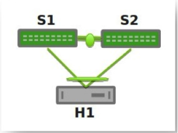
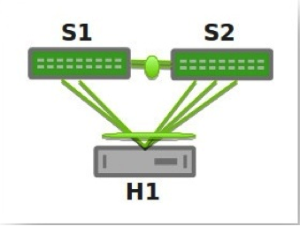
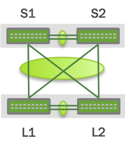
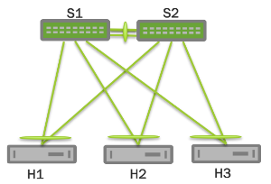
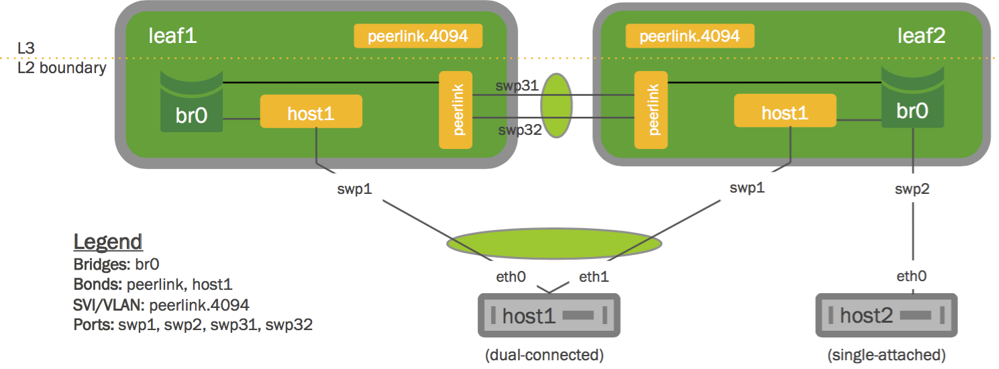
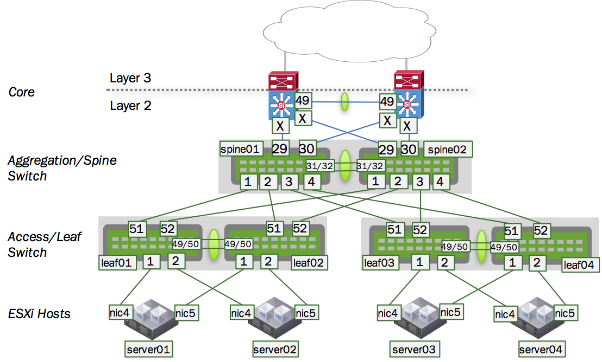
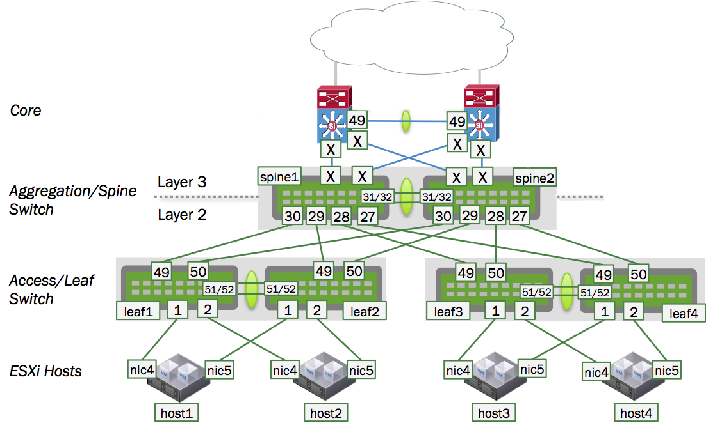
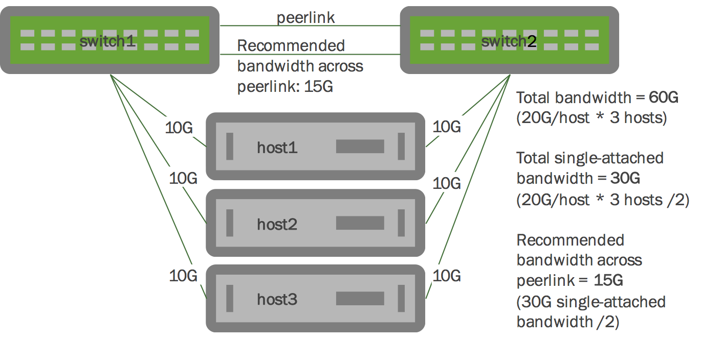

Multi-Chassis Link Aggregation - MLAG
Multi-Chassis Link Aggregation, or MLAG, enables a server or switch with a two-port bond (such as a link aggregation group/LAG, EtherChannel, port group or trunk) to connect those ports to different switches and operate as if they are connected to a single, logical switch. This provides greater redundancy and greater system throughput.
MLAG or CLAG?
The Cumulus Linux implementation of MLAG is referred to by other vendors as CLAG, MC-LAG or VPC. You will even see references to CLAG in Cumulus Linux, including the management daemon, named clagd, and other options in the code, such as clag-id, which exist for historical purposes. But rest assured that the Cumulus Linux implementation is truly a multi-chassis link aggregation protocol, so we call it MLAG.
Dual-connected devices can create LACP bonds that contain links to each physical switch. Thus, active-active links from the dual-connected devices are supported even though they are connected to two different physical switches.
A basic setup looks like this:

You can see an example of how to set up this configuration by running:
cumulus@switch:~$ net example clag basic-clagThe two switches, S1 and S2, known as peer switches, cooperate so that they appear as a single device to host H1's bond. H1 distributes traffic between the two links to S1 and S2 in any manner that you configure on the host. Similarly, traffic inbound to H1 can traverse S1 or S2 and arrive at H1.
Contents
MLAG Requirements
MLAG has these requirements:
-
There must be a direct connection between the two peer switches implementing MLAG (S1 and S2). This is typically a bond for increased reliability and bandwidth.
-
There must be only two peer switches in one MLAG configuration, but you can have multiple configurations in a network for switch-to-switch MLAG (see below).
-
The peer switches implementing MLAG must be running Cumulus Linux version 2.5 or later.
-
You must specify a unique clag-id for every dual-connected bond on each peer switch; the value must be between 1 and 65535 and must be the same on both peer switches in order for the bond to be considered dual-connected.
-
The dual-connected devices (servers or switches) must use LACP (IEEE 802.3ad/802.1ax) to form the bond. The peer switches must also use LACP.
More elaborate configurations are also possible. The number of links between the host and the switches can be greater than two, and does not have to be symmetrical:

Additionally, since S1 and S2 appear as a single switch to other bonding devices, pairs of MLAG switches can also be connected to each other in a switch-to-switch MLAG setup:

In this case, L1 and L2 are also MLAG peer switches, and thus present a two-port bond from a single logical system to S1 and S2. S1 and S2 do the same as far as L1 and L2 are concerned. For a switch-to-switch MLAG configuration, each switch pair must have a unique system MAC address. In the above example, switches L1 and L2 each have the same system MAC address configured. Switch pair S1 and S2 each have the same system MAC address configured; however, it is a different system MAC address than the one used by the switch pair L1 and L2.
LACP and Dual-Connectedness
In order for MLAG to operate correctly, the peer switches must know which links are dual-connected, or are connected to the same host or switch. To do this, specify a clag-id for every dual-connected bond on each peer switch; the clag-id must be the same for the corresponding bonds on both peer switches. Link Aggregation Control Protocol (LACP), the IEEE standard protocol for managing bonds, is used for verifying dual-connectedness. LACP runs on the dual-connected device and on each of the peer switches. On the dual-connected device, the only configuration requirement is to create a bond that will be managed by LACP.
On each of the peer switches, the links connected to the dual-connected host or switch must be placed in the bond. This is true even if the links are a single port on each peer switch, where each port is placed into a bond, as shown below:

All of the dual-connected bonds on the peer switches have their system ID set to the MLAG system ID. Therefore, from the point of view of the hosts, each of the links in its bond is connected to the same system, and so the host will use both links.
Each peer switch periodically makes a list of the LACP partner MAC addresses for all of their bonds and sends that list to its peer (using the clagd service; see below). The LACP partner MAC address is the MAC address of the system at the other end of a bond, which in the figure above would be hosts H1, H2 and H3. When a switch receives this list from its peer, it compares the list to the LACP partner MAC addresses on its switch. If any matches are found and the clag-id for those bonds match, then that bond is a dual-connected bond. You can also find the LACP partner MAC address by running net show bridge macs, or by looking in the /sys/class/net/<bondname>/bonding/ad_partner_mac sysfs file for each bond.
Configuring MLAG
Configuring MLAG involves:
-
On the dual-connected devices, creating a bond that uses LACP.
-
On each peer switch, configuring the interfaces, including bonds, VLANs, bridges and peer links.
Keep MLAG Configurations in Sync
MLAG synchronizes the dynamic state between the two peer switches, but it does not synchronize the switch configurations. After modifying the configuration of one peer switch, you must make the same changes to the configuration on the other peer switch. This applies to all configuration changes, including:
-
Port configuration: For example, VLAN membership, MTU and bonding parameters.
-
Bridge configuration: For example, spanning tree parameters or bridge properties.
-
Static address entries: For example, static FDB entries and static IGMP entries.
-
QoS configuration: For example, ACL entries.
You can verify the configuration of VLAN membership using the net show clag verify-vlans command.
cumulus@leaf01:~$ net show clag verify-vlansOur Bond Interface VlanId Peer Bond Interface------------------ ------ -------------------server01 1 server01 server01 10 server01 server01 20 server01 server01 30 server01 server01 40 server01 server01 50 server01 uplink 1 uplink uplink 10 uplink uplink 20 uplink uplink 30 uplink uplink 40 uplink uplink 50 uplink uplink 100 uplink uplink 101 uplink uplink 102 uplink uplink 103 uplink uplink 104 uplink uplink 105 uplink uplink 106 uplink uplink 107 uplink uplink 108 uplink uplink 109 uplink uplink 110 uplink uplink 111 uplink uplink 112 uplink uplink 113 uplink uplink 114 uplink uplink 115 uplink uplink 116 uplink uplink 117 uplink uplink 118 uplink uplink 119 uplink uplink 120 uplink uplink 121 uplink uplink 122 uplink uplink 123 uplink uplink 124 uplink uplink 125 uplink uplink 126 uplink uplink 127 uplink uplink 128 uplink uplink 129 uplink uplink 130 uplink uplink 131 uplink uplink 132 uplink uplink 133 uplink uplink 134 uplink uplink 135 uplink uplink 136 uplink uplink 137 uplink uplink 138 uplink uplink 139 uplink uplink 140 uplink uplink 141 uplink uplink 142 uplink uplink 143 uplink uplink 144 uplink uplink 145 uplink uplink 146 uplink uplink 147 uplink uplink 148 uplink uplink 149 uplink uplink 150 uplink uplink 151 uplink uplink 152 uplink uplink 153 uplink uplink 154 uplink uplink 155 uplink uplink 156 uplink uplink 157 uplink uplink 158 uplink uplink 159 uplink uplink 160 uplink uplink 161 uplink uplink 162 uplink uplink 163 uplink uplink 164 uplink uplink 165 uplink uplink 166 uplink uplink 167 uplink uplink 168 uplink uplink 169 uplink uplink 170 uplink uplink 171 uplink uplink 172 uplink uplink 173 uplink uplink 174 uplink uplink 175 uplink uplink 176 uplink uplink 177 uplink uplink 178 uplink uplink 179 uplink uplink 180 uplink uplink 181 uplink uplink 182 uplink uplink 183 uplink uplink 184 uplink uplink 185 uplink uplink 186 uplink uplink 187 uplink uplink 188 uplink uplink 189 uplink uplink 190 uplink uplink 191 uplink uplink 192 uplink uplink 193 uplink uplink 194 uplink uplink 195 uplink uplink 196 uplink uplink 197 uplink uplink 198 uplink uplink 199 uplink uplink 200 uplink Reserved MAC Address Range
In order to prevent MAC address conflicts with other interfaces in the same bridged network, Cumulus Networks has reserved a range of MAC addresses specifically to use with MLAG. This range of MAC addresses is 44:38:39:ff:00:00 to 44:38:39:ff:ff:ff.
Cumulus Networks recommends you use this range of MAC addresses when configuring MLAG.
Configuring the Host or Switch
On your dual-connected device, create a bond that uses LACP. The method you use varies with the type of device you are configuring. The following image is a basic MLAG configuration, showing all the essential elements; a more detailed two-leaf/two-spine configuration is below.

Configuring the Interfaces
Every interface that connects to the MLAG pair from a dual-connected device should be placed into a bond, even if the bond contains only a single link on a single physical switch (even though the MLAG pair contains two or more links). Layer 2 data travels over this bond. In the examples throughout this chapter, peerlink is the name of the bond.
Single-attached hosts, also known as orphan ports, can be just a member of the bridge.
Additionally, the fast mode of LACP should be configured on the bond to allow more timely updates of the LACP state. These bonds are then placed in a bridge, which must include the peer link between the switches.
In order to enable communication between the clagd services on the peer switches, you should choose an unused VLAN (also known as a switched virtual interface or SVI here) and assign an unrouteable link-local address to give the peer switches layer 3 connectivity between each other. To ensure that the VLAN is completely independent of the bridge and spanning tree forwarding decisions, configure the VLAN as a VLAN subinterface on the peer link bond rather than the VLAN-aware bridge. Cumulus Networks recommends you use 4094 for the peer link VLAN (peerlink.4094 below) if possible. In addition, to avoid issues with STP, make sure you include untagged traffic on the peer link.
You can also specify a backup interface, which is any layer 3 backup interface for your peer links in the event that the peer link goes down. See below for more information about the backup link.
For example, if peerlink is the inter-chassis bond, and VLAN 4094 is the peer link VLAN, configure peerlink.4094 as follows:
Configuring the peerlink Interface
cumulus@leaf01:~$ net add interface peerlink.4094 peerlink.4094cumulus@leaf01:~$ net add interface peerlink.4094 address 169.254.1.1/30cumulus@leaf01:~$ net add interface peerlink.4094 clagd-peer-ip 169.254.1.2cumulus@leaf01:~$ net add interface peerlink.4094 clagd-backup-ip 192.0.2.50cumulus@leaf01:~$ net add interface peerlink.4094 clagd-sys-mac 44:38:39:FF:40:94cumulus@leaf01:~$ net pendingcumulus@leaf01:~$ net commitThere is no need to add VLAN 4094 to the bridge VLAN list, as it is unnecessary there.
The above commands produce the following configuration in the /etc/network/interfaces file:
auto peerlink.4094iface peerlink.4094 address 169.254.1.1/30 clagd-peer-ip 169.254.1.2 clagd-backup-ip 192.0.2.50 clagd-sys-mac 44:38:39:FF:40:94Keep in mind that if you change the MLAG configuration by editing the interfaces file, the changes take effect when you bring the peer link interface up with ifup. Do not use systemctl restart clagd.service to apply the new configuration.
Don't Use 169.254.0.1
Do not use 169.254.0.1 as the MLAG peerlink IP address, as Cumulus Linux uses this address exclusively for BGP unnumbered interfaces.
Understanding Switch Roles and Setting Priority
Each MLAG-enabled switch in the pair has a role. When the peering relationship is established between the two switches, one switch is put into the primary role, and the other one is put into the secondary role. When an MLAG-enabled switch is in the secondary role, it does not send STP BPDUs on dual-connected links; it only sends BPDUs on single-connected links. The switch in the primary role sends STP BPDUs on all single- and dual-connected links.
|
Sends BPDUs Via |
Primary |
Secondary |
|
Single-connected links |
Yes |
Yes |
|
Dual-connected links |
Yes |
No |
By default, the role is determined by comparing the MAC addresses of the two sides of the peering link; the switch with the lower MAC address assumes the primary role. You can override this by setting the clagd-priority option for the peer link:
cumulus@leaf01:~$ net add interface peerlink.4094 clagd-priority 2048cumulus@leaf01:~$ net pendingcumulus@leaf01:~$ net commitThe switch with the lower priority value is given the primary role; the default value is 32768, and the range is 0 to 65535. Read the clagd(8) and clagctl(8) man pages for more information.
When the clagd service is exited during switch reboot or the service is stopped in the primary switch, the peer switch that is in the secondary role becomes the primary.
However, if the primary switch goes down without stopping the clagd service for any reason, or if the peer link goes down, the secondary switch will not change its role. In case the peer switch is determined to be not alive, the switch in the secondary role will roll back the LACP system ID to be the bond interface MAC address instead of the clagd-sys-mac and the switch in primary role uses the clagd-sys-mac as the LACP system ID on the bonds.
Example MLAG Configuration
An example configuration is included below. It configures two bonds for MLAG, each with a single port, a peer link that is a bond with two member ports, and three VLANs on each port.

You configure these interfaces using NCLU, so the bridges are in VLAN-aware mode. The bridges use these Cumulus Linux-specific keywords:
-
bridge-vids, which defines the allowed list of tagged 802.1q VLAN IDs for all bridge member interfaces. You can specify non-contiguous ranges with a space-separated list, like
bridge-vids 100-200 300 400-500. -
bridge-pvid, which defines the untagged VLAN ID for each port. This is commonly referred to as the native VLAN.
The bridge configurations below indicate that each bond carries tagged frames on VLANs 10, 20, 30, 40, 50 and 100 to 200 (as specified by bridge-vids), but untagged frames on VLAN 1 (as specified by bridge-pvid). Also, take note on how you configure the VLAN subinterfaces used for clagd communication (peerlink.4090 and peerlink.4094 in the sample configuration below). Finally, the host configurations for server01 through server04 are not shown here. The configurations for each corresponding node are almost identical, except for the IP addresses used for managing the clagd service.
VLAN Precautions
At minimum, this VLAN subinterface should not be in your layer 2 domain, and you should give it a very high VLAN ID (up to 4094). Read more about the range of VLAN IDs you can use.
The commands to create the configurations for both spines should look like the following. Note that the clag-id and clagd-sys-mac must be the same for the corresponding bonds on spine01 and spine02:
|
spine01 cumulus@spine01:~$ net show configuration commands echo 'auto lo' > /etc/network/interfacesecho 'iface lo inet loopback' >> /etc/network/interfacesecho 'auto eth0' >> /etc/network/interfacesecho 'iface eth0 inet dhcp' >> /etc/network/interfacesecho 'zebra=yes' > /etc/quagga/daemonsecho '' > /etc/quagga/Quagga.confnet abortnet add hostname spine01net add interface swp1-4,29-30 mtu 9216net add bond exit01-02 bond slaves swp29-30net add bond leaf01-02 bond slaves swp1-2net add bond leaf03-04 bond slaves swp3-4net add bond peerlink bond slaves swp31-32net add loopback lo ip address 10.0.0.21/32net add interface eth0 ip address dhcpnet add bridge bridge ports leaf01-02,leaf03-04,exit01-02,peerlinknet add bridge bridge pvid 1net add bridge bridge vids 10,20,30,40,50,100-200net add bridge stp treeprio 4096net add vlan 10 ip address 10.1.10.2/24net add vlan 10 ip address-virtual 44:39:39:FF:00:10 10.1.10.1/24net add vlan 20 ip address 10.1.20.2/24net add vlan 20 ip address-virtual 44:39:39:FF:00:20 10.1.20.1/24net add vlan 10 alias 'VM 10 Network'net add vlan 20 alias 'VM 20 Network'net add bond exit01-02 clag id 2930net add bond exit01-02 mtu 9216net add bond leaf01-02 mtu 9216net add bond leaf03-04 mtu 9216net add bond leaf01-02 clag id 1012net add bond leaf03-04 clag id 1034net add interface peerlink.4090 ip address 169.254.255.1/30net add interface peerlink.4090 clag backup-ip 192.168.0.22net add interface peerlink.4090 clag enable yesnet add interface peerlink.4090 clag peer-ip 169.254.255.2net add interface peerlink.4090 clag sys-mac 44:39:39:FF:40:90net add routing log file /var/log/quagga/quagga.lognet add routing log timestamp precision 6cumulus@spine01:~$ cat /etc/network/interfaces# The loopback network interfaceauto loiface lo inet loopback address 10.0.0.21/32# The primary network interfaceauto eth0iface eth0 inet dhcpauto swp1iface swp1 mtu 9216auto swp2iface swp2 mtu 9216auto swp3iface swp3 mtu 9216auto swp4iface swp4 mtu 9216auto swp29iface swp29 mtu 9216auto swp30iface swp30 mtu 9216auto swp31iface swp31auto swp32iface swp32auto bridgeiface bridge bridge-ports exit01-02 leaf01-02 leaf03-04 peerlink bridge-pvid 1 bridge-vids 10 20 30 40 50 100-200 bridge-vlan-aware yes mstpctl-treeprio 4096auto exit01-02iface exit01-02 bond-slaves swp29 swp30 clag-id 2930 mtu 9216auto leaf01-02iface leaf01-02 bond-slaves swp1 swp2 clag-id 1012 mtu 9216auto leaf03-04iface leaf03-04 bond-slaves swp3 swp4 clag-id 1034 mtu 9216auto peerlinkiface peerlink bond-slaves swp31 swp32auto peerlink.4090iface peerlink.4090 address 169.254.255.1/30 clagd-backup-ip 192.168.0.22 clagd-enable yes clagd-peer-ip 169.254.255.2 clagd-sys-mac 44:39:39:FF:40:90 auto vlan10iface vlan10 address 10.1.10.2/24 address-virtual 44:39:39:FF:00:10 10.1.10.1/24 alias VM 10 Network vlan-id 10 vlan-raw-device bridgeauto vlan20iface vlan20 address 10.1.20.2/24 address-virtual 44:39:39:FF:00:20 10.1.20.1/24 alias VM 20 Network vlan-id 20 vlan-raw-device bridge
|
spine02 cumulus@spine02:~$ net show configuration commands echo 'auto lo' > /etc/network/interfacesecho 'iface lo inet loopback' >> /etc/network/interfacesecho 'auto eth0' >> /etc/network/interfacesecho 'iface eth0 inet dhcp' >> /etc/network/interfacesecho 'zebra=yes' > /etc/quagga/daemonsecho '' > /etc/quagga/Quagga.confnet abortnet add hostname spine02net add interface swp1-4,29-30 mtu 9216net add bond exit01-02 bond slaves swp29-30net add bond leaf01-02 bond slaves swp1-2net add bond leaf03-04 bond slaves swp3-4net add bond peerlink bond slaves swp31-32net add loopback lo ip address 10.0.0.22/32net add interface eth0 ip address dhcpnet add bridge bridge ports leaf01-02,leaf03-04,exit01-02,peerlinknet add bridge bridge pvid 1net add bridge bridge vids 10,20,30,40,50,100-200net add bridge stp treeprio 4096net add vlan 10 ip address 10.1.10.3/24net add vlan 10 ip address-virtual 44:39:39:FF:00:10 10.1.10.1/24net add vlan 20 ip address 10.1.20.3/24net add vlan 20 ip address-virtual 44:39:39:FF:00:20 10.1.20.1/24net add vlan 10 alias 'VM 10 Network'net add vlan 20 alias 'VM 20 Network'net add bond exit01-02 clag id 2930net add bond exit01-02 mtu 9216net add bond leaf01-02 mtu 9216net add bond leaf03-04 mtu 9216net add bond leaf01-02 clag id 1012net add bond leaf03-04 clag id 1034net add interface peerlink.4090 ip address 169.254.255.2/30net add interface peerlink.4090 clag backup-ip 192.168.0.21net add interface peerlink.4090 clag enable yesnet add interface peerlink.4090 clag peer-ip 169.254.255.1net add interface peerlink.4090 clag sys-mac 44:39:39:FF:40:90net add interface peerlink.4090 alias 'Spine01-Spine02 MLAG peerlink'net add routing log file /var/log/quagga/quagga.lognet add routing log timestamp precision 6cumulus@spine02:~$ cat /etc/network/interfaces# The loopback network interfaceauto loiface lo inet loopback address 10.0.0.22/32# The primary network interfaceauto eth0iface eth0 inet dhcpauto swp1iface swp1 mtu 9216auto swp2iface swp2 mtu 9216auto swp3iface swp3 mtu 9216auto swp4iface swp4 mtu 9216auto swp29iface swp29 mtu 9216auto swp30iface swp30 mtu 9216auto swp31iface swp31auto swp32iface swp32auto bridgeiface bridge bridge-ports exit01-02 leaf01-02 leaf03-04 peerlink bridge-pvid 1 bridge-vids 10 20 30 40 50 100-200 bridge-vlan-aware yes mstpctl-treeprio 4096auto exit01-02iface exit01-02 bond-slaves swp29 swp30 clag-id 2930 mtu 9216auto leaf01-02iface leaf01-02 bond-slaves swp1 swp2 clag-id 1012 mtu 9216auto leaf03-04iface leaf03-04 bond-slaves swp3 swp4 clag-id 1034 mtu 9216auto peerlinkiface peerlink bond-slaves swp31 swp32auto peerlink.4090iface peerlink.4090 address 169.254.255.2/30 alias Spine01-Spine02 MLAG peerlink clagd-backup-ip 192.168.0.21 clagd-enable yes clagd-peer-ip 169.254.255.1 clagd-sys-mac 44:39:39:FF:40:90 auto vlan10iface vlan10 address 10.1.10.3/24 address-virtual 44:39:39:FF:00:10 10.1.10.1/24 alias VM 10 Network vlan-id 10 vlan-raw-device bridgeauto vlan20iface vlan20 address 10.1.20.3/24 address-virtual 44:39:39:FF:00:20 10.1.20.1/24 alias VM 20 Network vlan-id 20 vlan-raw-device bridge |
Here is an example configuration for the switches leaf01 through leaf04. Note that the clag-id and clagd-sys-mac must be the same for the corresponding bonds on leaf01 and leaf02 as well as leaf03 and leaf04:
|
leaf01 cumulus@leaf01:~$ net show configuration commands echo 'auto lo' > /etc/network/interfacesecho 'iface lo inet loopback' >> /etc/network/interfacesecho 'auto eth0' >> /etc/network/interfacesecho 'iface eth0 inet dhcp' >> /etc/network/interfacesecho 'zebra=yes' > /etc/quagga/daemonsecho '' > /etc/quagga/Quagga.confrm /var/lib/cumulus/nclu/nclu_acl.confnet abortnet add hostname leaf01net add interface swp1,49-52 mtu 9216net add bond peerlink bond slaves swp49-50net add bond server01 bond slaves swp1net add bond uplink bond slaves swp51-52net add loopback lo ip address 10.0.0.11/32net add interface eth0 ip address dhcpnet add bridge alias bridge01net add bridge bridge ports peerlink,uplink,server01net add bridge bridge vids 10,20,30,40,50,100-200net add bridge stp treeprio 32768net add vlan 500 ip address 192.168.1.252/24net add vlan 500 address-virtual 00:00:5e:00:01:01 192.168.1.254/24net add bond peerlink mtu 9216net add bond server01 mtu 9216net add bond uplink mtu 9216net add interface peerlink.4094 ip address 169.254.255.1/30net add interface peerlink.4094 clag backup-ip 192.168.0.12net add interface peerlink.4094 clag peer-ip 169.254.255.2net add interface peerlink.4094 clag sys-mac 44:39:39:FF:40:94net add bond server01 bridge vids 10,20,30,40,50net add bond server01 clag id 1net add bond uplink clag id 1000net add routing log file /var/log/quagga/quagga.lognet add routing log timestamp precision 6cumulus@leaf01:~$ cat /etc/network/interfacesauto loiface lo inet loopback address 10.0.0.11/32auto eth0iface eth0 inet dhcpauto swp1iface swp1 mtu 9216auto swp49iface swp49 mtu 9216auto swp50iface swp50 mtu 9216auto swp51iface swp51 mtu 9216auto swp52iface swp52 mtu 9216auto bridgeiface bridge alias bridge01 bridge-ports peerlink server01 uplink bridge-vids 10 20 30 40 50 100-200 bridge-vlan-aware yes mstpctl-treeprio 32768auto peerlinkiface peerlink bond-slaves swp49 swp50 mtu 9216auto peerlink.4094iface peerlink.4094 address 169.254.255.1/30 clagd-backup-ip 192.168.0.12 clagd-peer-ip 169.254.255.2 clagd-sys-mac 44:39:39:FF:40:94 auto server01iface server01 bond-slaves swp1 clag-id 1 bridge-vids 10 20 30 40 50 mtu 9216auto uplinkiface uplink bond-slaves swp51 swp52 clag-id 1000 mtu 9216 auto vlan500iface vlan500 address 192.168.1.252/24 address-virtual 00:00:5e:00:01:01 192.168.1.254/24 vlan-id 500 vlan-raw-device bridge |
leaf02 cumulus@leaf02:~$ net show conf commands echo 'auto lo' > /etc/network/interfacesecho 'iface lo inet loopback' >> /etc/network/interfacesecho 'auto eth0' >> /etc/network/interfacesecho 'iface eth0 inet dhcp' >> /etc/network/interfacesecho 'zebra=yes' > /etc/quagga/daemonsecho '' > /etc/quagga/Quagga.confrm /var/lib/cumulus/nclu/nclu_acl.confnet abortnet add hostname leaf02net add interface swp1,49-52 mtu 9216net add bond peerlink bond slaves swp49-50net add bond server01 bond slaves swp1net add bond uplink bond slaves swp51-52net add loopback lo ip address 10.0.0.12/32net add interface eth0 ip address dhcpnet add bridge bridge ports peerlink,uplink,server01net add bridge bridge vids 10,20,30,40,50,100-200net add bridge stp treeprio 32768net add bond peerlink mtu 9216net add bond server01 mtu 9216net add bond uplink mtu 9216net add interface peerlink.4094 ip address 169.254.255.2/30net add interface peerlink.4094 clag backup-ip 192.168.0.11net add interface peerlink.4094 clag peer-ip 169.254.255.1net add interface peerlink.4094 clag sys-mac 44:39:39:FF:40:94net add bond server01 bridge vids 10,20,30,40,50net add bond server01 clag id 1net add bond uplink clag id 1000net add log file /var/log/quagga/quagga.lognet add log timestamp precision 6cumulus@leaf02:~$ cat /etc/network/interfacesauto loiface lo inet loopback address 10.0.0.12/32auto eth0iface eth0 inet dhcpauto swp1iface swp1 mtu 9216auto swp49iface swp49 mtu 9216auto swp50iface swp50 mtu 9216auto swp51iface swp51 mtu 9216auto swp52iface swp52 mtu 9216auto bridgeiface bridge bridge-vlan-aware yes bridge-ports peerlink server01 uplink bridge-vids 10 20 30 40 50 100-200 mstpctl-treeprio 32768auto peerlinkiface peerlink bond-slaves swp49 swp50 mtu 9216auto peerlink.4094iface peerlink.4094 clagd-backup-ip 192.168.0.11 clagd-peer-ip 169.254.255.1 clagd-sys-mac 44:39:39:FF:40:94 address 169.254.255.2/30auto server01iface server01 bond-slaves swp1 clag-id 1 bridge-vids 10 20 30 40 50 mtu 9216auto uplinkiface uplink bond-slaves swp51 swp52 clag-id 1000 mtu 9216 |
|
leaf03 cumulus@leaf03:~$ net show conf commands echo 'auto lo' > /etc/network/interfacesecho 'iface lo inet loopback' >> /etc/network/interfacesecho 'auto eth0' >> /etc/network/interfacesecho 'iface eth0 inet dhcp' >> /etc/network/interfacesecho 'zebra=yes' > /etc/quagga/daemonsecho '' > /etc/quagga/Quagga.confrm /var/lib/cumulus/nclu/nclu_acl.confnet abortnet add hostname leaf03net add interface swp1-2,51-52 mtu 9216net add bond peerlink bond slaves swp49-50net add bond server03 bond slaves swp1net add bond server04 bond slaves swp2net add bond uplink bond slaves swp51-52net add loopback lo ip address 10.0.0.13/32net add interface eth0 ip address dhcpnet add bridge bridge ports server03,server04,uplink,peerlinknet add bridge bridge pvid 1net add bridge bridge vids 10,20,30,40,50,100-200net add bridge stp treeprio 32768net add interface peerlink.4093 ip address 169.254.255.1/30net add interface peerlink.4093 alias 'Leaf03-Leaf04 MLAG peerlink'net add interface peerlink.4093 clag backup-ip 192.168.0.14net add interface peerlink.4093 clag enable yesnet add interface peerlink.4093 clag peer-ip 169.254.255.2net add interface peerlink.4093 clag sys-mac 44:39:39:FF:40:93net add bond server03 bridge pvid 1net add bond server04 bridge pvid 1net add bond server03 bridge vids 10,20,30,40,50net add bond server04 bridge vids 10,20,30,40,50net add bond server03 clag id 3net add bond server03 mtu 9216net add bond server04 mtu 9216net add bond uplink mtu 9216net add bond server04 clag id 4net add bond uplink clag id 1000net add log file /var/log/quagga/quagga.lognet add log timestamp precision 6cumulus@leaf03:~$ cat /etc/network/interfaces# This file describes the network interfaces available on your system# and how to activate them. For more information, see interfaces(5), ifup(8)## Please see /usr/share/doc/python-ifupdown2/examples/ for examples### The loopback network interfaceauto loiface lo inet loopback address 10.0.0.13/32# The primary network interfaceauto eth0iface eth0 inet dhcpauto swp1iface swp1 mtu 9216auto swp2iface swp2 mtu 9216auto swp49iface swp49auto swp50iface swp50auto swp51iface swp51 mtu 9216auto swp52iface swp52 mtu 9216auto bridgeiface bridge bridge-ports peerlink server03 server04 uplink bridge-pvid 1 bridge-vids 10 20 30 40 50 100-200 bridge-vlan-aware yes mstpctl-treeprio 32768auto peerlinkiface peerlink bond-slaves swp49 swp50auto peerlink.4093iface peerlink.4093 address 169.254.255.1/30 alias Leaf03-Leaf04 MLAG peerlink clagd-backup-ip 192.168.0.14 clagd-enable yes clagd-peer-ip 169.254.255.2 clagd-sys-mac 44:39:39:FF:40:93auto server03iface server03 bond-slaves swp1 bridge-pvid 1 bridge-vids 10 20 30 40 50 clag-id 3 mtu 9216auto server04iface server04 bond-slaves swp2 bridge-pvid 1 bridge-vids 10 20 30 40 50 clag-id 4 mtu 9216auto uplinkiface uplink bond-slaves swp51 swp52 clag-id 1000 mtu 9216 |
leaf04 cumulus@leaf04:~$ net show configuration commands echo 'auto lo' > /etc/network/interfacesecho 'iface lo inet loopback' >> /etc/network/interfacesecho 'auto eth0' >> /etc/network/interfacesecho 'iface eth0 inet dhcp' >> /etc/network/interfacesecho 'zebra=yes' > /etc/quagga/daemonsecho '' > /etc/quagga/Quagga.confrm /var/lib/cumulus/nclu/nclu_acl.confnet abortnet add hostname leaf04net add interface swp1-2,51-52 mtu 9216net add bond peerlink bond slaves swp49-50net add bond server03 bond slaves swp1net add bond server04 bond slaves swp2net add bond uplink bond slaves swp51-52net add loopback lo ip address 10.0.0.14/32net add interface eth0 ip address dhcpnet add bridge bridge ports server03,server04,uplink,peerlinknet add bridge bridge pvid 1net add bridge bridge vids 10,20,30,40,50,100-200net add bridge stp treeprio 32768net add interface peerlink.4093 ip address 169.254.255.2/30net add interface peerlink.4093 alias 'Leaf03-Leaf04 MLAG peerlink'net add interface peerlink.4093 clag backup-ip 192.168.0.13net add interface peerlink.4093 clag enable yesnet add interface peerlink.4093 clag peer-ip 169.254.255.1net add interface peerlink.4093 clag sys-mac 44:39:39:FF:40:93net add bond server03 bridge pvid 1net add bond server04 bridge pvid 1net add bond server03 bridge vids 10,20,30,40,50net add bond server04 bridge vids 10,20,30,40,50net add bond server03 clag id 3net add bond server03 mtu 9216net add bond server04 mtu 9216net add bond uplink mtu 9216net add bond server04 clag id 4net add bond uplink clag id 1000net add log file /var/log/quagga/quagga.lognet add log timestamp precision 6cumulus@leaf04:~$ cat /etc/network/interfaces# This file describes the network interfaces available on your system# and how to activate them. For more information, see interfaces(5), ifup(8)## Please see /usr/share/doc/python-ifupdown2/examples/ for examples### The loopback network interfaceauto loiface lo inet loopback address 10.0.0.14/32# The primary network interfaceauto eth0iface eth0 inet dhcpauto swp1iface swp1 mtu 9216auto swp2iface swp2 mtu 9216auto swp49iface swp49auto swp50iface swp50auto swp51iface swp51 mtu 9216auto swp52iface swp52 mtu 9216auto bridgeiface bridge bridge-ports peerlink server03 server04 uplink bridge-pvid 1 bridge-vids 10 20 30 40 50 100-200 bridge-vlan-aware yes mstpctl-treeprio 32768auto peerlinkiface peerlink bond-slaves swp49 swp50auto peerlink.4093iface peerlink.4093 address 169.254.255.2/30 alias Leaf03-Leaf04 MLAG peerlink clagd-backup-ip 192.168.0.13 clagd-enable yes clagd-peer-ip 169.254.255.1 clagd-sys-mac 44:39:39:FF:40:93auto server03iface server03 bond-slaves swp1 bridge-pvid 1 bridge-vids 10 20 30 40 50 clag-id 3 mtu 9216auto server04iface server04 bond-slaves swp2 bridge-pvid 1 bridge-vids 10 20 30 40 50 clag-id 4 mtu 9216auto uplinkiface uplink bond-slaves swp51 swp52 clag-id 1000 mtu 9216 |
Disabling clagd on an Interface
In the configurations above, the clagd-peer-ip and clagd-sys-mac parameters are mandatory, while the rest are optional. When mandatory clagd commands are present under a peer link subinterface, by default clagd-enable is set to yes and doesn't need to be specified; to disable clagd on the subinterface, set clagd-enable to no:
cumulus@spine01:~$ net add interface peerlink.4090 clag enable no cumulus@spine01:~$ net pendingcumulus@spine01:~$ net commitUse clagd-priority to set the role of the MLAG peer switch to primary or secondary. Each peer switch in an MLAG pair must have the same clagd-sys-mac setting. Each clagd-sys-mac setting should be unique to each MLAG pair in the network. For more details, refer to man clagd.
Checking the MLAG Configuration Status
You can easily check the status of your MLAG configuration using net show clag:
cumulus@spine01:~$ net show clag The peer is alive Our Priority, ID, and Role: 32768 44:38:39:00:00:41 primary Peer Priority, ID, and Role: 32768 44:38:39:00:00:42 secondary Peer Interface and IP: peerlink.4090 169.254.255.2 Backup IP: 192.168.0.22 (active) System MAC: 44:39:39:ff:40:90CLAG InterfacesOur Interface Peer Interface CLAG Id Conflicts Proto-Down Reason---------------- ---------------- ------- -------------------- ----------------- leaf03-04 leaf03-04 1034 - - exit01-02 - 2930 - - leaf01-02 leaf01-02 1012 - -Using the clagd Command Line Interface
A command line utility called clagctl is available for interacting with a running clagd service to get status or alter operational behavior. For detailed explanation of the utility, please refer to the clagctl(8)man page.
The following is a sample output of the MLAG operational status displayed by clagctl:
The peer is alive Our Priority, ID, and Role: 32768 44:38:39:00:00:11 primary Peer Priority, ID, and Role: 32768 44:38:39:00:00:12 secondary Peer Interface and IP: peerlink.4094 169.254.255.2 Backup IP: 192.168.0.12 (active) System MAC: 44:39:39:ff:40:94CLAG InterfacesOur Interface Peer Interface CLAG Id Conflicts Proto-Down Reason---------------- ---------------- ------- -------------------- ----------------- server01 server01 1 - - uplink uplink 1000 - - Configuring MLAG with a Traditional Mode Bridge
It's possible to configure MLAG with a bridge in traditional mode instead of VLAN-aware mode.
Traditional Mode Limitation
You cannot configure a traditional mode bridge using NCLU; you must configure it manually in the /etc/network/interfaces file.
In order to configure MLAG with a traditional mode bridge, the peer link and all dual-connected links must be configured as untagged/native ports on a bridge (note the absence of any VLANs in the bridge-ports line and the lack of the bridge-vlan-aware parameter below):
MLAG with a Traditional Mode Bridge
auto br0iface br0 bridge-ports peerlink spine1-2 host1 host2For a deeper comparison of traditional versus VLAN-aware bridge modes, read this knowledge base article.
Peer Link Interfaces and the protodown State
In addition to the standard UP and DOWN administrative states, an interface that is a member of an MLAG bond can also be in a protodown state. When MLAG detects a problem that could result in connectivity issues such as traffic black-holing or a network meltdown if the link carrier was left in an UP state, it can put that interface into protodown state. Such connectivity issues include:
-
When the peer link goes down but the peer switch is up (that is, the backup link is active).
-
When the bond is configured with an MLAG ID, but the clagd service is not running (whether it was deliberately stopped or simply died).
-
When an MLAG-enabled node is booted or rebooted, the MLAG bonds are placed in a protodown state until the node establishes a connection to its peer switch, or five minutes have elapsed.
When an interface goes into a protodown state, it results in a local OPER DOWN (carrier down) on the interface. As of Cumulus Linux 2.5.5, the protodown state can be manipulated with the ip link set command. Given its use in preventing network meltdowns, manually manipulating protodown is not recommended outside the scope of interaction with the Cumulus Networks support team.
The following ip link show command output shows an interface in protodown state. Notice that the link carrier is down (NO-CARRIER):
cumulus@switch:~$ net show bridge link swp13: swp1 state DOWN: <NO-CARRIER,BROADCAST,MULTICAST,MASTER,UP> mtu 9216 master pfifo_fast master host-bond1 state DOWN mode DEFAULT qlen 500 protodown on link/ether 44:38:39:00:69:84 brd ff:ff:ff:ff:ff:ffSpecifying a Backup Link
You can specify a backup link for your peer links in the event that the peer link goes down. When this happens, the clagd service uses the backup link to check the health of the peer switch. To configure this, add clagd-backup-ip <ADDRESS> to the peer link configuration:
Specifying a Backup Link
cumulus@spine01:~$ net add interface peerlink.4094 clag backup-ip 192.0.2.50cumulus@spine01:~$ net pendingcumulus@spine01:~$ net commitThe backup IP address must be different than the peer link IP address (clagd-peer-ip). It must be reachable by a route that doesn't use the peer link and it must be in the same network namespace as the peer link IP address.
Cumulus Networks recommends you use the switch's management IP address for this purpose.
You can also specify the backup UDP port. The port defaults to 5342, but you can configure it as an argument in clagd-args using --backupPort <PORT>.
cumulus@spine01:~$ net add interface peerlink.4094 clag args --backupPort 5400cumulus@spine01:~$ net pendingcumulus@spine01:~$ net commitYou can see the backup IP address if you run net show clag:
cumulus@spine01:~$ net show clag The peer is alive Our Priority, ID, and Role: 32768 44:38:39:00:00:41 primary Peer Priority, ID, and Role: 32768 44:38:39:00:00:42 secondary Peer Interface and IP: peerlink.4090 169.254.255.2 Backup IP: 192.168.0.22 (active) System MAC: 44:39:39:ff:40:90CLAG InterfacesOur Interface Peer Interface CLAG Id Conflicts Proto-Down Reason---------------- ---------------- ------- -------------------- ----------------- leaf03-04 leaf03-04 1034 - - exit01-02 - 2930 - - leaf01-02 leaf01-02 1012 - -Specifying a Backup Link to a VRF
You can configure the backup link to a VRF or management VRF. Include the name of the VRF or management VRF when you specify clagd-backup-ip <ADDRESS> vrf <VRF name>. Here is a sample configuration:
Specifying a Backup Link to a VRF
cumulus@spine01:~$ net add interface peerlink.4090 clag backup-ip 192.168.0.22 vrf mgmtcumulus@spine01:~$ net pendingcumulus@spine01:~$ net commitYou cannot use the VRF on a peer link subinterface.
Verify the backup link by running net show clag backup-ip:
cumulus@leaf01:~$ net show clag backup-ip Backup info:IP: 192.168.0.12; State: active; Role: primaryPeer priority and id: 32768 44:38:39:00:00:12; Peer role: secondary Comparing VRF and Management VRF Configurations
The configuration for both a VRF and management VRF is exactly the same. A sample configuration where the backup interface is in a VRF could be as follows:
cumulus@leaf01:~$ net show configuration ... auto swp52s0iface swp52s0 address 192.0.2.1/24 vrf greenauto greeniface green vrf-table autoauto peer5.4000iface peer5.4000 address 192.0.2.15/24 clagd-peer-ip 192.0.2.16 clagd-backup-ip 192.0.2.2 vrf green clagd-sys-mac 44:38:39:01:01:01 ...Which you can verify with net show clag status verbose:
cumulus@leaf01:~$ net show clag status verboseThe peer is alive Peer Priority, ID, and Role: 32768 00:02:00:00:00:13 primary Our Priority, ID, and Role: 32768 c4:54:44:f6:44:5a secondary Peer Interface and IP: peer5.4000 192.0.2.16 Backup IP: 192.0.2.2 vrf green (active) System MAC: 44:38:39:01:01:01CLAG InterfacesOur Interface Peer Interface CLAG Id Conflicts Proto-Down Reason---------------- ---------------- ------- -------------------- ----------------- bond4 bond4 4 - - bond1 bond1 1 - - bond2 bond2 2 - - bond3 bond3 3 - - ...Monitoring Dual-Connected Peers
Upon receipt of a valid message from its peer, the switch knows that clagd is alive and executing on that peer. This causes clagd to change the system ID of each bond that was assigned a clag-id from the default value (the MAC address of the bond) to the system ID assigned to both peer switches. This makes the hosts connected to each switch act as if they are connected to the same system so that they will use all ports within their bond. Additionally, clagd determines which bonds are dual-connected and modifies the forwarding and learning behavior to accommodate these dual-connected bonds.
If the peer does not receive any messages for three update intervals, then that peer switch is assumed to no longer be acting as an MLAG peer. In this case, the switch reverts all configuration changes so that it operates as a standard non-MLAG switch. This includes removing all statically assigned MAC addresses, clearing the egress forwarding mask, and allowing addresses to move from any port to the peer port. Once a message is again received from the peer, MLAG operation starts again as described earlier. You can configure a custom timeout setting by adding --peerTimeout <VALUE> to clagd-args, like this:
cumulus@spine01:~$ net add interface peerlink.4094 clag args --peerTimeout 900cumulus@spine01:~$ net pendingcumulus@spine01:~$ net commitOnce bonds are identified as dual-connected, clagd sends more information to the peer switch for those bonds. The MAC addresses (and VLANs) that have been dynamically learned on those ports are sent along with the LACP partner MAC address for each bond. When a switch receives MAC address information from its peer, it adds MAC address entries on the corresponding ports. As the switch learns and ages out MAC addresses, it informs the peer switch of these changes to its MAC address table so that the peer can keep its table synchronized. Periodically, at 45% of the bridge ageing time, a switch will send its entire MAC address table to the peer, so that peer switch can verify that its MAC address table is properly synchronized.
The switch sends an update frequency value in the messages to its peer, which tells clagd how often the peer will send these messages. You can configure a different frequency by adding --lacpPoll <SECONDS> to clagd-args:
cumulus@spine01:~$ net add interface peerlink.4094 clag args --lacpPoll 900cumulus@spine01:~$ net pendingcumulus@spine01:~$ net commitConfiguring Layer 3 Routed Uplinks
In this scenario, the spine switches connect at layer 3, as shown in the image below. Alternatively, the spine switches can be singly connected to each core switch at layer 3 (not shown below).

In this design, the spine switches route traffic between the server hosts in the layer 2 domains and the core. The servers (host1 - host4) each have a layer 2 connection up to the spine layer where the default gateway for the host subnets resides. However, since the spine switches as gateway devices communicate at layer 3, you need to configure a protocol such as VRR (Virtual Router Redundancy) between the spine switch pair to support active/active forwarding.
Then, to connect the spine switches to the core switches, you need to determine whether the routing is static or dynamic. If it's dynamic, you must choose which protocol — OSPF or BGP — to use. When enabling a routing protocol in an MLAG environment it is also necessary to manage the uplinks, because by default MLAG is not aware of layer 3 uplink interfaces. In the event of a peer link failure MLAG does not remove static routes or bring down a BGP or OSPF adjacency unless a separate link state daemon such as ifplugd is used.
IGMP Snooping with MLAG
IGMP snooping processes IGMP reports received on a bridge port in a bridge to identify hosts that are configured to receive multicast traffic destined to that group. An IGMP query message received on a port is used to identify the port that is connected to a router and configured to receive multicast traffic.
IGMP snooping is enabled by default on the bridge. IGMP snooping multicast database entries and router port entries are synced to the peer MLAG switch. If there is no multicast router in the VLAN, the IGMP querier can be configured on the switch to generate IGMP query messages by adding a configuration like the following:
Configuring IGMP Snooping
cumulus@spine01:~$ net add bridge bridge mcsnoop yescumulus@spine01:~$ net add bridge bridge igmp-querier-src 123.1.1.1cumulus@spine01:~$ net pendingcumulus@spine01:~$ net commitTo display multicast group and router port information, use the net show bridge mdb command:
cumulus@switch:~$ net show bridge mdbdev br port bond0 vlan 100 grp 234.1.1.1 temprouter ports on br: bond0Monitoring the Status of the clagd Service
Due to the critical nature of the clagd service, systemd continuously monitors the status of clagd. systemd monitors the clagd service through the use of notify messages every 30 seconds. If the clagd service dies or becomes unresponsive for any reason and systemd receives no messages after 60 seconds, systemd restarts clagd. systemd logs these failures in /var/log/syslog, and, on the first failure, generates a cl-support file as well.
This monitoring is automatically configured and enabled as long as clagd is enabled (that is, clagd-peer-ip and clagd-sys-mac are configured for an interface) and the clagd service is running. When clagd is explicitly stopped, for example with the systemctl stop clagd.service command, monitoring of clagd is also stopped.
Checking clagd Status
You can check the status of clagd monitoring by using the cl-service-summary command:
cumulus@switch:~$ sudo cl-service-summary summaryThe systemctl daemon 5.4 uptime: 15m...Service clagd enabled active ...Or the systemctl status command:
cumulus@switch:~$ sudo systemctl status clagd.service ● clagd.service - Cumulus Linux Multi-Chassis LACP Bonding Daemon Loaded: loaded (/lib/systemd/system/clagd.service; enabled) Active: active (running) since Mon 2016-10-03 20:31:50 UTC; 4 days ago Docs: man:clagd(8) Main PID: 1235 (clagd) CGroup: /system.slice/clagd.service ├─1235 /usr/bin/python /usr/sbin/clagd --daemon 169.254.255.2 peerlink.4090 44:39:39:FF:40:90 --prior... └─1307 /sbin/bridge monitor fdbFeb 01 23:19:30 leaf01 clagd[1717]: Cleanup is executing.Feb 01 23:19:31 leaf01 clagd[1717]: Cleanup is finishedFeb 01 23:19:31 leaf01 clagd[1717]: Beginning execution of clagd version 1.3.0Feb 01 23:19:31 leaf01 clagd[1717]: Invoked with: /usr/sbin/clagd --daemon 169.254.255.2 peerlink.4094 44:39:39:FF:40:94 --pri...168.0.12Feb 01 23:19:31 leaf01 clagd[1717]: Role is now secondaryFeb 01 23:19:31 leaf01 clagd[1717]: Initial config loadedFeb 01 23:19:31 leaf01 systemd[1]: Started Cumulus Linux Multi-Chassis LACP Bonding Daemon.Feb 01 23:24:31 leaf01 clagd[1717]: HealthCheck: reload timeout.Feb 01 23:24:31 leaf01 clagd[1717]: Role is now primary; Reload timeoutHint: Some lines were ellipsized, use -l to show in full.MLAG Best Practices
For MLAG to function properly, the dual-connected hosts' interfaces should be configured identically on the pair of peering switches. See the note above in the Configuring MLAG section.
Understanding MTU in an MLAG Configuration
Note that the MTU in MLAG traffic is determined by the bridge MTU. Bridge MTU is determined by the lowest MTU setting of an interface that is a member of the bridge. If an MTU other than the default of 1500 bytes is desired, you must configure the MTU on each physical interface and bond interface that are members of the MLAG bridges in the entire bridged domain.
For example, if an MTU of 9216 is desired through the MLAG domain in the example shown above:
On all four leaf switches, configure mtu 9216 for each of the following interfaces, since they are members of bridge bridge: peerlink, uplink, server01.
Configuring MTU
cumulus@leaf01:~$ net add bond peerlink mtu 9216cumulus@leaf01:~$ net add bond uplink mtu 9216cumulus@leaf01:~$ net add bond server01 mtu 9216cumulus@leaf01:~$ net pendingcumulus@leaf01:~$ net commitThe above commands produce the following configuration in the /etc/network/interfaces file:
auto bridgeiface bridge bridge-ports peerlink uplink server01 bridge-vids 10 20 30 40 50 100-200 bridge-vlan-aware yes mstpctl-treeprio 32768Likewise, to ensure the MTU 9216 path is respected through the spine switches above, also change the MTU setting for bridge bridge by configuring mtu 9216 for each of the following members of bridge bridge on both spine01 and spine02: leaf01-02, leaf03-04, exit01-02, peerlink.
cumulus@spine01:~$ net add bond leaf01-02 mtu 9216cumulus@spine01:~$ net add bond leaf03-04 mtu 9216cumulus@spine01:~$ net add bond leaf01-02 mtu 9216cumulus@spine01:~$ net add bond peerlink mtu 9216cumulus@spine01:~$ net pendingcumulus@spine01:~$ net commitThe above commands produce the following configuration in the /etc/network/interfaces file:
auto bridgeiface bridge bridge-ports leaf01-02 leaf03-04 exit01-02 peerlink bridge-pvid 1 bridge-vids 10 20 30 40 50 100-200 bridge-vlan-aware yes mstpctl-treeprio 4096Sizing the Peerlink
What's the best size for a peerlink? Before we answer that, let's talk a little bit about the peerlink itself.
The peerlink tends to carry very little traffic when compared to the bandwidth consumed by dataplane traffic. In a typical MLAG configuration, most every connection between the two switches in the MLAG pair is dual-connected, so the only traffic going across the peerlink is traffic from the clagd process and some LLDP or LACP traffic; the traffic received on the peerlink is not forwarded out of the dual-connected bonds.
However, there are some instances where a host is connected to only one switch in the MLAG pair; these include:
-
You have a hardware limitation on the host where there is only one PCIE slot, and thus, one NIC on the system, so the host is only single-connected across that interface.
-
The host doesn't support 802.3ad and you can't create a bond on it.
-
You are accounting for a link failure, where the host may become single connected until the failure is rectified.
So, in terms of sizing the peerlink, in general, you need to determine how much bandwidth is traveling across the single-connected interfaces, and allocate half of that bandwidth to the peerlink. We recommend half of the single-connected bandwidth because, on average, one half of the traffic destined to the single-connected host will arrive on the switch directly connected to the single-connected host and the other half will arrive on the switch that is not directly connected to the single-connected host. When this happens, only the traffic that arrives on the switch that is not directly connected to the single-connected host needs to traverse the peerlink, which is how you calculate 50% of the traffic.
In addition, you may want to add extra links to the peerlink bond to handle link failures in the peerlink bond itself.
In illustration below, each host has 2 10G links, with each 10G link going to each switch in the MLAG pair. Each host has 20G of dual-connected bandwidth, so all three hosts have a total of 60G of dual-connected bandwidth. We recommend you allocate at least 15G of bandwidth to each peerlink bond, which represents half of the single-connected bandwidth.

Scaling this example out to a full rack, when planning for link failures, you need only allocate enough bandwidth to meet your site's strategy for handling failure scenarios. Imagine a full rack with 40 servers and two switches in it. You may plan for, say, 4 to 6 servers to lose connectivity to a single switch and become single connected before you respond to the event. So expanding upon our previous example, if you have 40 hosts each with 20G of bandwidth dual-connected to the MLAG pair, you might allocate 20G to 30G of bandwidth to the peerlink — which accounts for half of the single-connected bandwidth for 4 to 6 hosts.
STP Interoperability with MLAG
Cumulus Networks recommends that you always enable STP in your layer 2 network.
Further, with MLAG, Cumulus Networks recommends you enable BPDU guard on the host-facing bond interfaces. (For more information about BPDU guard, see BPDU Guard and Bridge Assurance.)
Debugging STP with MLAG
Running net show <interface> spanning-tree displays MLAG information that can be useful when debugging:
cumulus@switch:~$ net show bridge spanning-treebridge:peerlink CIST info enabled yes role Designated port id 8.002 state forwarding .............. bpdufilter port no clag ISL yes clag ISL Oper UP yes clag role primary clag dual conn mac 00:00:00:00:00:00 clag remote portID F.FFF clag system mac 44:39:39:FF:40:90Best Practices for STP with MLAG
-
The STP global configuration must be the same on both the switches.
-
The STP configuration for dual-connected ports should be the same on both peer switches.
-
Use NCLU (net) commands for all spanning tree configurations, including bridge priority, path cost and so forth. Do not use brctl commands for spanning tree, except for brctl stp on/off, as changes are not reflected to mstpd and can create conflicts.
Troubleshooting MLAG
Viewing the MLAG Log File
By default, when clagd is running, it logs its status to the /var/log/clagd.log file and syslog. Example log file output is below:
cumulus@spine01:~$ sudo tail /var/log/clagd.log 2016-10-03T20:31:50.471400+00:00 spine01 clagd[1235]: Initial config loaded2016-10-03T20:31:52.479769+00:00 spine01 clagd[1235]: The peer switch is active.2016-10-03T20:31:52.496490+00:00 spine01 clagd[1235]: Initial data sync to peer done.2016-10-03T20:31:52.540186+00:00 spine01 clagd[1235]: Role is now primary; elected2016-10-03T20:31:54.250572+00:00 spine01 clagd[1235]: HealthCheck: role via backup is primary2016-10-03T20:31:54.252642+00:00 spine01 clagd[1235]: HealthCheck: backup active2016-10-03T20:31:54.537967+00:00 spine01 clagd[1235]: Initial data sync from peer done.2016-10-03T20:31:54.538435+00:00 spine01 clagd[1235]: Initial handshake done.2016-10-03T20:31:58.527464+00:00 spine01 clagd[1235]: leaf03-04 is now dual connected.2016-10-03T22:47:35.255317+00:00 spine01 clagd[1235]: leaf01-02 is now dual connected.Large Packet Drops on the Peerlink Interface
If you notice a large volume of packet drops across one of the peerlink interfaces, this could be expected behavior. These drops serve to prevent looping of BUM (broadcast, unknown unicast, multicast) packets. When a packet is received across the peerlink, if the destination lookup results in an egress interface that is a dual-connected bond, the switch does not forward the packet to prevent loops. This results in a drop being recorded on the peerlink.
You can detect this issue by running net show counters or ethtool -S <interface>.
Using NCLU, the number of dropped packets is displayed in the RX_DRP column when you run net show counters:
cumulus@switch:~$ net show counters Kernel Interface tableIface MTU Met RX_OK RX_ERR RX_DRP RX_OVR TX_OK TX_ERR TX_DRP TX_OVR Flg--------------- ----- ----- ------- -------- -------- -------- ------- -------- -------- ------ -----peerlink 1500 0 19226721 0 2952460 0 55115330 0 364 0 BMmRUpeerlink.4094 1500 0 0 0 0 0 5379243 0 0 0 BMRUswp51 1500 0 6587220 0 2129676 0 38957769 0 202 0 BMsRUswp52 1500 0 12639501 0 822784 0 16157561 0 162 0 BMsRUWhen you run ethtool -S on a peerlink interface, the drops are indicated by the HwIfInDiscards counter:
cumulus@switch:~$ sudo ethtool -S swp51NIC statistics:HwIfInOctets: 669507330HwIfInUcastPkts: 658871HwIfInBcastPkts: 2231559HwIfInMcastPkts: 3696790HwIfOutOctets: 2752224343HwIfOutUcastPkts: 1001632HwIfOutMcastPkts: 3743199HwIfOutBcastPkts: 34212938HwIfInDiscards: 2129675Caveats and Errata
If both the backup and peer connectivity are lost within a 30-second window, the switch in the secondary role misinterprets the event sequence, believing the peer switch is down, so it takes over as the primary.